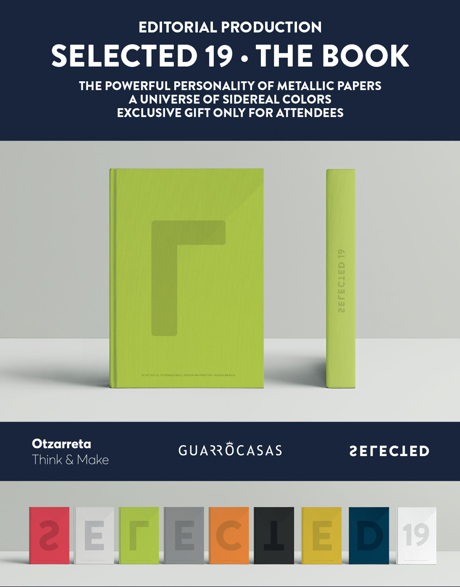

DESIGN BOOK 2019 - TENDENCIAS,INSPIRACIÓN Y CREATIVIDAD

La colección Sideral es un proyecto de diseño en sí mismo: piense en los nombres, realice pruebas de color, elija cada color de la serie hasta que obtenga una explosión de colores metálicos en sus manos. Esa es la razón por la que no hemos elegido una sola opción para la portada ... En cambio, hemos creado un juego en el que hemos asociado los nueve colores de Sideral a las letras SELECCIONADAS del año 2019. Cuando se ensamblan las diferentes cubiertas, se puede componer el logotipo completo y se aprecia el impacto policromático. Así, cada uno trabaja por separado sin perder su esencia y el conjunto es un universo de colores brillantes en el que el papel es el protagonista absoluto.